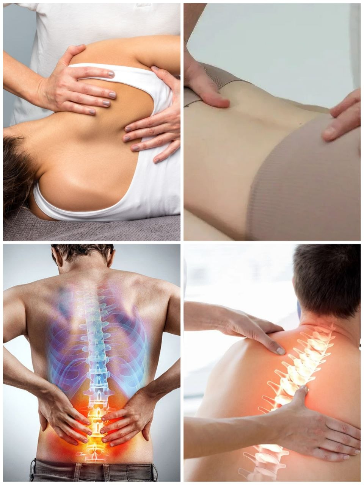

«Лечить — это процесс без результата. Исцелить — это значит избавить, очистить.»
КОСМОЭНЕРГЕТИКА · РЕЗОНАНС · ИСЦЕЛЕНИЕ
Войди в Резонанс с живой вселенной

Я — Павел Савинкин, дипломированный космоэнергет. Помогаю человеку вернуть собственную силу: очищаю биополе, снимаю деструктивные программы и подключаю тело к высоким космическим вибрациям.
опуститься в поток
02 · СВАДХИСТАНА
Я — проводник, а не врач
Многие годы меня вело к этому: телесные практики, чистка пространства, осознанный подход к здоровью. 28 марта 2026 года я завершил первое официальное обучение в Международной академии космоэнергетики Марата Софина и получил диплом целителя-космоэнергета.
Космоэнергетика — это духовная дисциплина, подтверждённая наукой, в том числе физикой. Её результаты можно ощущать сразу. Основатель направления — академик В.А. Петров. Метод опирается на работу с космическими каналами и их вибрациями для физического и ментального здоровья человека.
Теперь я могу официально работать и помогать людям. Это только начало пути — я учусь каждый день и с удовольствием обмениваюсь практикой услугу за услугу с другими специалистами.
- 2026 Диплом академии космоэнергетики Марата Софина
- 7+ освоенных целительских каналов
- ∞ состояний, которые поддаются исцелению через энергию
03 · МАНИПУРА
Что происходит на сеансе
Каждое заболевание — последствие нарушения естественного течения энергии. Я работаю с этими нарушениями: на уровне биополя, тонких тел, чакр и каналов. В первые же сеансы тело включает свой режим самоисцеления.
Очищение биополя
Снимаю порчи, сглазы, проклятия, привороты и их энергетические последствия — то общее недомогание и хронику, у которой не находится медицинской причины.
Синхронизация чакр
Успокаиваю нервную систему через очищение и синхронизацию чакр — это нервные сплетения и узлы с точки зрения анатомии. Мысли становятся ясными, тело — лёгким.
Регенерация тела
Запускаю процесс естественного восстановления: пищеварительная, костная, нервная, эндокринная, дыхательная, сердечно-сосудистая, лимфатическая, репродуктивная системы.
Снятие сущностей
Лярвы, инкубы, сукубы, мыслеформы — астральные паразиты, которые крадут силу и толкают на пороки. Убираются высоковибрационными потоками за 15–20 минут.
Энергетическая защита
Ставлю защиту от недоброжелателей и энерговампиров. Ты чувствуешь её сам и учишься поддерживать в рабочем состоянии.
Работа с болью
Головные боли, мигрени, метеозависимость, мышечные блоки, женские заболевания, бесплодие, нарушения щитовидной железы и ЖКТ, воспаления, травмы и ожоги.
04 · АНАХАТА
Каналы вибраций
Под каждое состояние существует свой космический канал — частота, которая откликается, очищает и восстанавливает. Подключение работает удалённо: расстояние не имеет значения, потому что вибрация не знает километров.

05 · ВИШУДХА
Из записок целителя
В организме человека каждую секунду самовосстанавливается 3,8 миллиона клеток. Тело умеет исцелять себя само — мы просто разучились его слушать.
· о регенерации ·
В G5 и МРТ мы верим, а в энергетические каналы и эфир — нет. В радиоволны верим, а в нейронную связь между людьми и космосом — нет. Двойные понятия, дамы и господа.
· о квантовой физике ·
Если у человека стабильное сильное энергополе — яркая светлая аура — то и его тело абсолютно здорово. Заболевание сначала рождается на уровне биополя, а потом приходит в тело.
· об ауре ·
Подключаешься к нужному каналу, начинаешь с ним вибрировать на одной волне, используешь его энергию. Управляешь и направляешь потоки мыслями. Чем больше практики — тем мощнее результат.
· о резонансе ·
Если в твоей жизни появляется человек — это всегда для чего-то. Случайностей не существует. Энергетическое взаимодействие всегда расширяет сознание всех участников.
· о встречах ·
Магнитная буря не хочет тебя погубить. В ней буря разных вибраций, но ты «ловишь» только подобные своим. Чисти биополе — и метеозависимость уйдёт.
· о тональности ·
06 · АДЖНА
Сеанс
Восстановление энергии и Силы
Освобождение от чужих и чужеродных энергий. Лёгкость в теле. Возврат концентрации, смысла и радости жизни.
2 000 ₽
- почувствуешь поток светлой Божественной энергии
- вернётся здоровый полноценный сон
- уйдут негативные программы и тяжесть
- включится режим самоисцеления тела
- «снимешь с себя старую кожу»
Расстояние не имеет значения. Все взаимодействия — в рамках квантовой физики и энергии Создателя.
07 · САХАСРАРА
Связь
Космоэнергетика — добрая Сила.
Пусть твоё биополе будет ярким, а тело — здоровым. 🙏